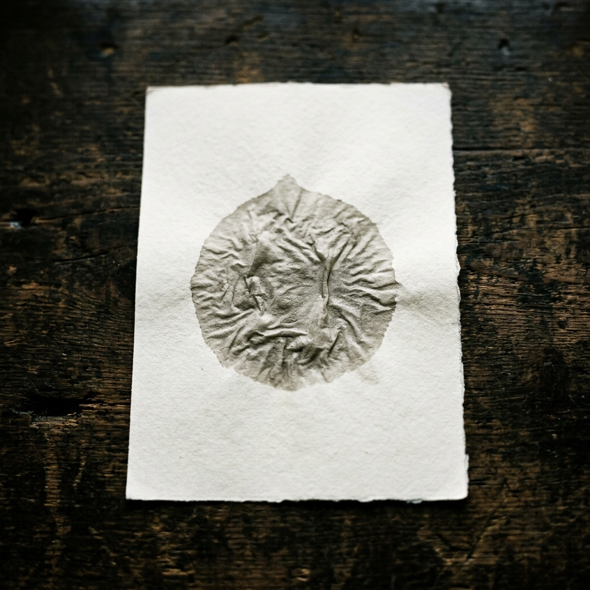

AIを、もっと身近に。
もっと使いやすく。
私のミッションは、急速に進化するAIという魔法を、誰もが日常で使いこなせる「道具」として、分かりやすく、温かく世の中に広めていくことです。
現場での過酷な実体験をベースに、ITとAIの力で「人間の負担を減らし、創造性を最大化する」方法を日々追求しています。最新のAI情報を1年以上発信し続けているのは、その可能性を一人でも多くの人に伝えたいという想いがあるからです。
「難しいことを、誰よりも分かりやすく。」 あなたの隣に寄り添うAIパートナーとして、誠実かつ革新的なサポートをお約束します。
Principles
- ✓ 現場の痛みを理解する人間主義
- ✓ 常に最新を追い続ける知的好奇心
- ✓ 本質を分かりやすく伝える言語化力
- ✓ 一つひとつの仕事に込める誠実さ
AI Workflow
私の制作プロセスは、AIとの対話から始まります。
Insight & Plan
AIと共に情報の海をリサーチし、最も効果的な構成案を瞬時に構築します。
Co-Creation
プロンプトエンジニアリングを駆使し、高品質なドラフトを高速に生成。人間が「魂」を吹き込みます。
Refinement
細部にまでこだわった調整と検証。AIの効率と、人間の感性を融合させた唯一無二の成果物へと仕上げます。
Works & Expertise

AI情報ブログ『AI INFO 2026』
最新のAIトレンドを日々リサーチし、専門的な知見を分かりやすく言語化。情報収集能力と解説力を兼ね備えています。

ノベルゲーム『水の子』（原作）
noteで公開中の短編ホラーをベースにしたプロフェッショナルな習作。物語を多媒体で再構築する企画・構成力を示します。

Organic Luxury Retreat『River's Soul』
自然と洗練の融合をテーマにしたWeb制作。HTML/CSSの基礎力に加え、モダンなUI/UXを追求した制作例です。
Customer Success & Support
これまでの多角的な経験を活かし、ユーザーに寄り添った誠実なサポートを提供。AIツールを用いた効率的な課題解決も得意としています。
新しい可能性を、
語り合いましょう。
アノテーション案件、記事執筆、Webサポートなど、私がお役に立てることがあればお気軽にご相談ください。 24時間以内に折り返しご連絡いたします。